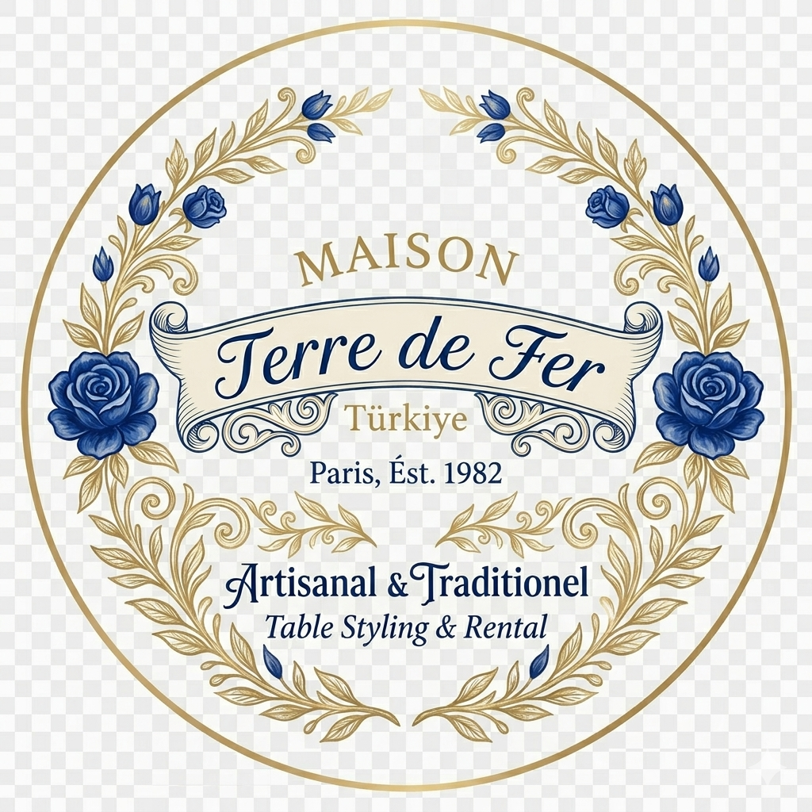

<!DOCTYPE html>
<html lang="tr">
<head>
    <meta charset="UTF-8">
    <meta name="viewport" content="width=device-width, initial-scale=1.0">
    <title>Terre de Fer Türkiye | Zamansız Tasarımlar</title>
    <link rel="icon" type="image/png" href="images/favicon.png">
    <link rel="stylesheet" href="style.css">
    <link href="https://fonts.googleapis.com/css2?family=Playfair+Display:ital,wght@0,400;0,700;1,400&family=Inter:wght@300;400;600&display=swap" rel="stylesheet">
</head>
<script>
        // Navbar Kaydırma Efekti
        window.addEventListener('scroll', function() {
            const navbar = document.querySelector('.navbar');
            if (window.scrollY > 50) {
                navbar.classList.add('scrolled');
            } else {
                navbar.classList.remove('scrolled');
            }
        });

        // Smooth Scroll (Yumuşak Kaydırma) - Bazı tarayıcılar için ek destek
        document.querySelectorAll('a[href^="#"]').forEach(anchor => {
            anchor.addEventListener('click', function (e) {
                e.preventDefault();
                document.querySelector(this.getAttribute('href')).scrollIntoView({
                    behavior: 'smooth'
                });
            });
        });
    </script>
</body>
</html>


<body>

    <div class="announcement-bar">
        Terre de Fer Türkiye Koleksiyonu Şimdi Yayında — Doğadan Evinize
    </div>

    <nav class="navbar">
        <div class="logo">TERRE DE FER</div>
        <ul class="nav-links">
            <li><a href="#home">Anasayfa</a></li>
            <li><a href="#collection">Koleksiyon</a></li>
            <li><a href="#about">Hikayemiz</a></li>
            <li><a href="https://www.instagram.com/terre.de.fer.turkiye" target="_blank">Instagram</a></li>
        </ul>
    </nav>

    <section id="contact" style="padding: 100px 8%; text-align: center; background-color: #fff;">
    <div class="section-title">
        <span class="subtitle">Bize Ulaşın</span>
        <h2>Sizi Dinlemek İsteriz</h2>
        <div class="underline"></div>
        <a href="https://www.instagram.com/terre.de.fer.turkiye" target="_blank" class="btn-primary" style="margin-top: 30px;">INSTAGRAM'DAN YAZIN</a>
    </div>
</section>


    <header class="hero" id="home">
        <div class="hero-overlay"></div>
        <div class="hero-content">
            <span class="subtitle">Terre de Fer Türkiye</span>
            <h1>Toprağın ve Estetiğin Buluşması</h1>
            <p>Yaşam alanlarınıza karakter katan, özenle seçilmiş rustik ve modern parçalar.</p>
            <a href="#collection" class="btn-primary">Koleksiyonu Keşfet</a>
        </div>
    </header>

    <section class="grid-section" id="collection">
        <div class="section-title">
            <h2>Terre de Fer Seçkisi</h2>
            <div class="underline"></div>
        </div>
        
        <div class="grid-container">
            <div class="card">
                <div class="card-image image-1"></div>
                <h3>Zanaatın İzinde</h3>
                <p>Terre de Fer ruhunu yansıtan el işçiliği detaylar.</p>
            </div>
            <div class="card">
                <div class="card-image image-2"></div>
                <h3>Doğal Yaşam</h3>
                <p>Evinizin her köşesi için sürdürülebilir estetik.</p>
            </div>
            <div class="card">
                <div class="card-image image-3"></div>
                <h3>Özel Koleksiyon</h3>
                <p>Sadece Türkiye'ye özel sınırlı sayıda parçalar.</p>
            </div>
        </div>
    </section>

    <section class="about-section" id="about">
        <div class="about-container">
            <div class="about-text">
                <span class="subtitle">Hikayemiz</span>
                <h2>Terre de Fer Türkiye</h2>
                <p>
                    Toprağın ham halinden, modern yaşamın estetik ihtiyaçlarına uzanan bir yolculuk. 
                    Terre de Fer olarak, zamansız tasarımları ve doğal dokuları evlerinize taşımayı amaçlıyoruz. 
                    Her bir parçamız, doğanın sadeliğini ve zanaatkarlığın inceliğini yansıtır.
                </p>
                <a href="#contact" class="btn-secondary">Daha Fazlasını Öğren</a>
            </div>
            <div class="about-image">
                
            </div>
        </div>
    </section>

    <section class="instagram-grid">
        <div class="insta-item"></div>
        <div class="insta-item"></div>
        <div class="insta-item"></div>
        <div class="insta-item"></div>
    </section>

    <section id="contact" style="padding: 100px 8%; text-align: center; background-color: #fff;">
        <div class="section-title">
            <span class="subtitle">Bize Ulaşın</span>
            <h2>Sizi Dinlemek İsteriz</h2>
            <div class="underline"></div>
            <p style="color: var(--text-light); max-width: 600px; margin: 20px auto;">
                Özel siparişler, iş birlikleri veya merak ettikleriniz için bize e-posta yoluyla ulaşabilirsiniz.
            </p>
            <a href="mailto:merhaba@terredefer.com.tr" class="btn-primary" style="margin-top: 30px;">E-POSTA GÖNDER</a>
        </div>
    </section>

    <footer style="padding: 80px 8%; background: #f1efeb; display: grid; grid-template-columns: repeat(auto-fit, minmax(200px, 1fr)); gap: 40px; text-align: left;">
    <div class="footer-col">
        <div class="footer-logo" style="font-size: 22px; margin-bottom: 20px;">TERRE DE FER</div>
        <p style="font-size: 13px; color: var(--text-light);">Doğadan ilham alan, zamansız ve sürdürülebilir tasarımlar.</p>
    </div>
    <div class="footer-col">
        <h4 style="font-size: 14px; margin-bottom: 20px; letter-spacing: 2px;">KEŞFET</h4>
        <ul style="list-style: none; font-size: 12px; line-height: 2.5;">
            <li><a href="#collection" style="text-decoration: none; color: var(--text-light);">Koleksiyon</a></li>
            <li><a href="#about" style="text-decoration: none; color: var(--text-light);">Hikayemiz</a></li>
            <li><a href="#contact" style="text-decoration: none; color: var(--text-light);">İletişim</a></li>
        </ul>
    </div>
    <div class="footer-col">
        <h4 style="font-size: 14px; margin-bottom: 20px; letter-spacing: 2px;">TAKİP ET</h4>
        <ul style="list-style: none; font-size: 12px; line-height: 2.5;">
            <li><a href="#" style="text-decoration: none; color: var(--text-light);">Instagram</a></li>
            <li><a href="#" style="text-decoration: none; color: var(--text-light);">Pinterest</a></li>
        </ul>
    </div>
</footer>
<div style="text-align: center; padding: 20px; background: #f1efeb; font-size: 10px; color: #999; border-top: 1px solid #e5e2dd;">
    &copy; 2026 TERRE DE FER TÜRKİYE. TÜM HAKLARI SAKLIDIR.
</div>

</body>
</html>